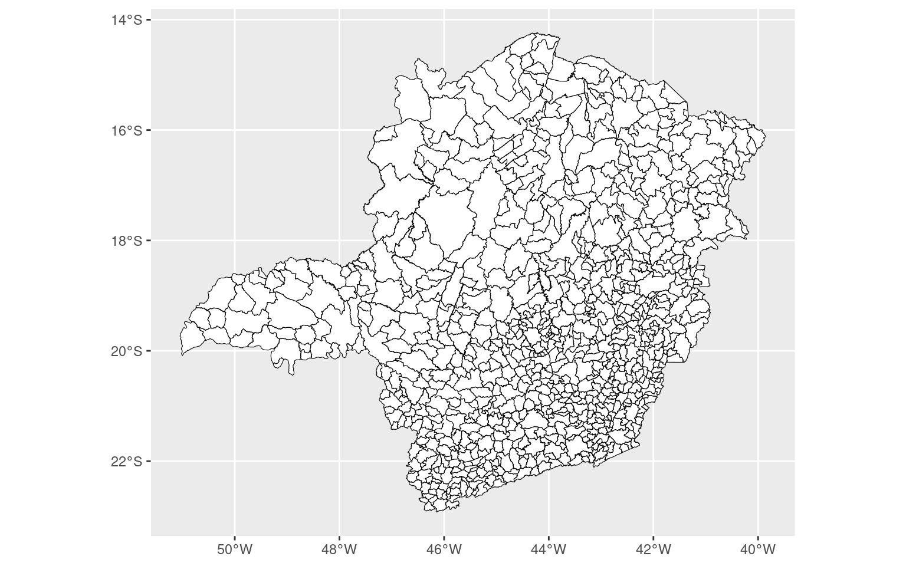
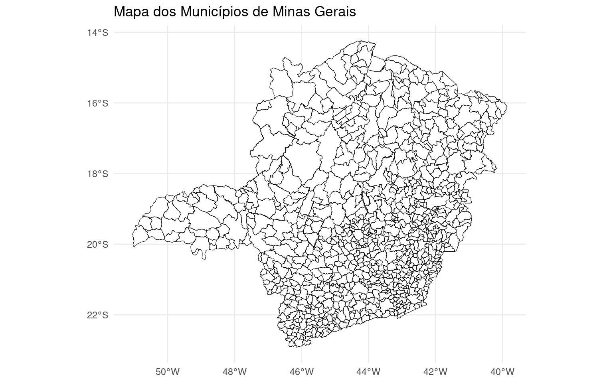
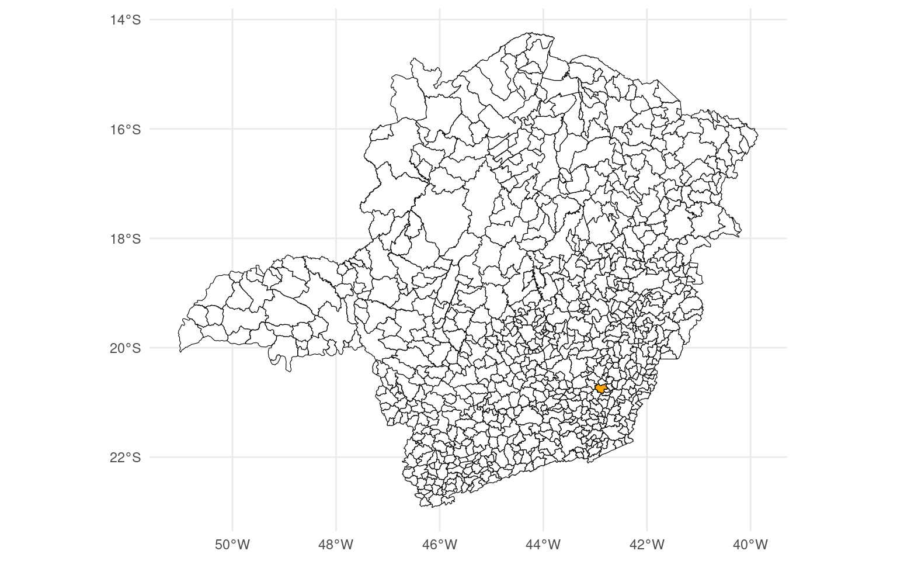
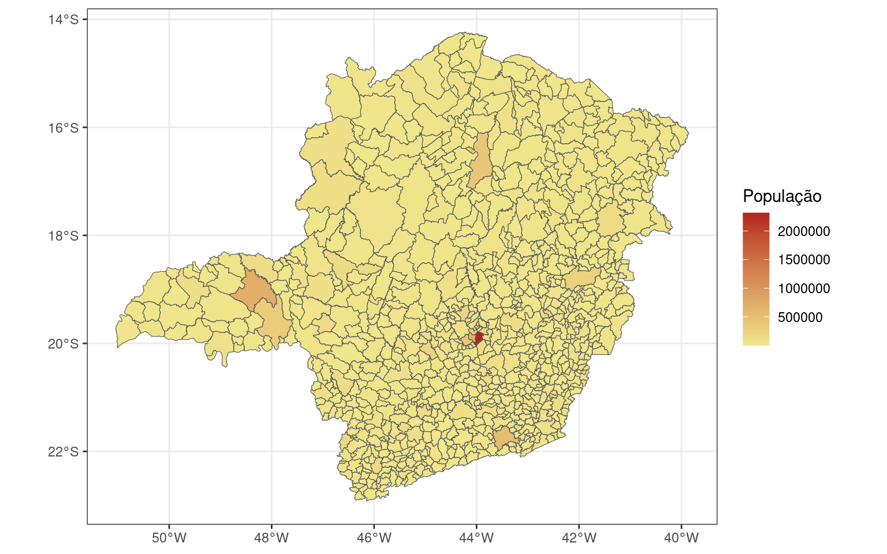
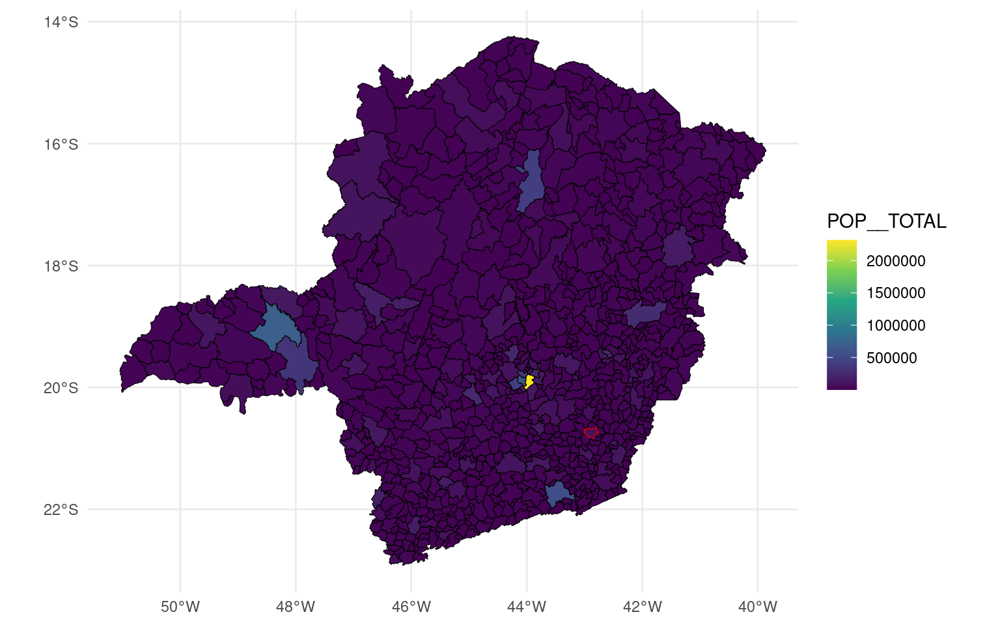
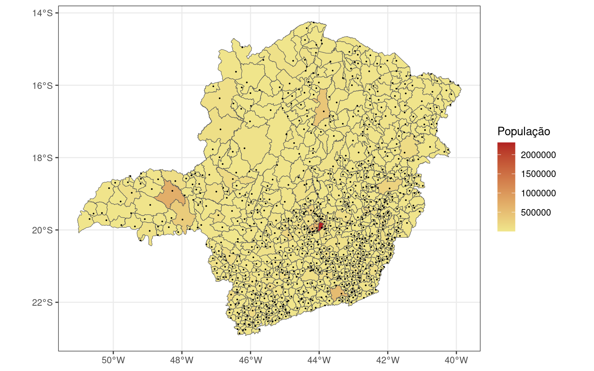
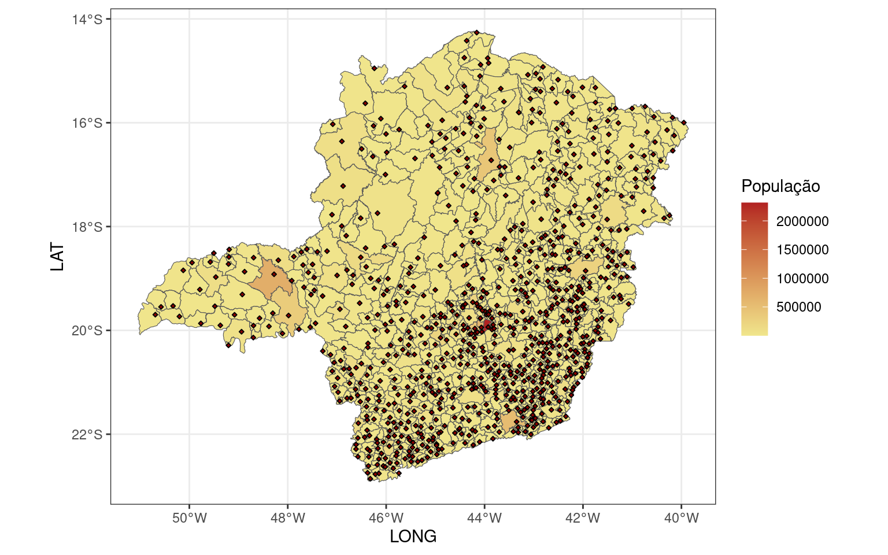
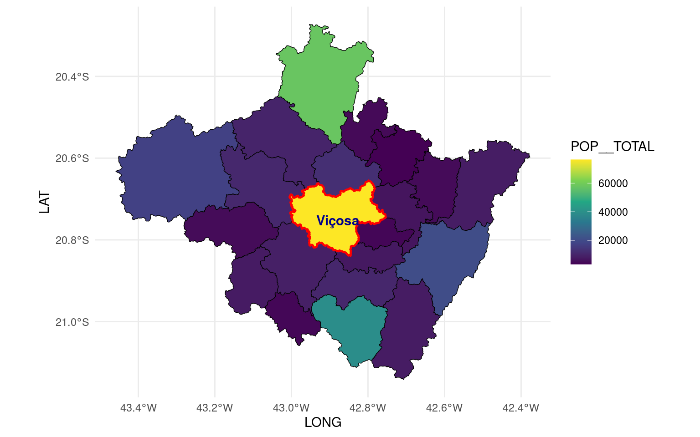
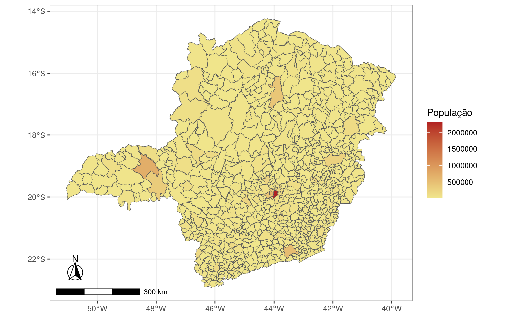

1 Mapas em R com ggplot
O ggplot2 é um pacote de visualização de dados.É baseado na ideia de “Grammar of Graphics” o que permite criar gráficos de maneira eficiente, seguindo uma abordagem consistente e estruturada.
Alguns conceitos-chave do ggplot2 incluem:
Camadas (Layers): O gráfico é construído em camadas, onde cada camada adiciona uma parte à visualização. Isso permite a construção incremental de gráficos complexos.
Aesthetics (Estéticas): As estéticas mapeiam variáveis aos elementos visuais do gráfico, como cor, forma e tamanho. Por exemplo, você pode mapear uma variável para a cor dos pontos em um gráfico de dispersão.
Geometrias (Geometries): As geometrias determinam o tipo de gráfico que você está criando. Por exemplo,
geom_point()cria um gráfico de dispersão, enquantogeom_bar()cria um gráfico de barras.Facetas (Facets): As facetas permitem dividir o gráfico em subgráficos com base em uma variável categórica, facilitando a comparação de diferentes subconjuntos de dados.
Escalas (Scales): As escalas controlam como os dados são mapeados para as estéticas. Por exemplo, você pode ajustar a escala de cores ou de eixos para melhor representar os dados.
Vamos criar um mapa dos municípios de Minas Gerais uilizando o arquivo mg_muns_3.shp que criamos no tutorial 1.
1.2 Mapas
Vamos criar um mapa onde cada município é representado por um polígono. Estes poligonos terão preenchimento branco, borda preta e uma largura de borda de 0.20.
- não esqueça de carregar a biblioteca
library(ggplot2)
# Carrega a biblioteca ggplot2, uma poderosa ferramenta de visualização em R.
library(ggplot2)
# Inicia a construção de um gráfico usando ggplot2 e adiciona uma camada de geometria espacial (sf).
# Neste caso, a camada representa os municípios de Minas Gerais.
# Os parâmetros fill, color e lwd controlam as características visuais da representação gráfica.
ggplot() +
geom_sf(data = mg_muns_3, fill = "white", color = "black", lwd = 0.20)
ggplot() +: Inicia a construção do gráfico. O operador+é usado para adicionar camadas ao gráfico de forma incremental.geom_sf(data = mg_muns_3, fill = "white", color = "black", lwd = 0.2):geom_sf(): Esta função especifica que a camada a ser adicionada ao gráfico será uma camada de geometria espacial (usando o pacotesf).data = mg_muns_3: Especifica o conjunto de dadosmg_muns_3que contém informações sobre as geometrias espaciais dos municípios de Minas Gerais.fill = "white": Define a cor de preenchimento das geometrias como branco.color = "black": Define a cor da borda das geometrias como preto.lwd = 0.2: Define a largura da linha (borda) das geometrias como 0.2.
1.2.1 Podemos fazer alguma edição
- incluir titulo
- mudar o tema
Claro, vou incluir o theme_minimal() ao código, que é um tema minimalista para o gráfico. Aqui está o código atualizado:
# Adiciona um título ao gráfico.
ggplot() +
geom_sf(data = mg_muns_3, fill = "white", color = "black", lwd = 0.20) +
ggtitle("Mapa dos Municípios de Minas Gerais") +
# Adiciona um tema minimalista ao gráfico.
theme_minimal()
A adição de theme_minimal() aplica um estilo visual minimalista ao gráfico, removendo elementos não essenciais e simplificando a aparência geral. Isso pode ser útil para enfatizar os dados e tornar a visualização mais limpa.
1.2.2 Vamos destacar o município de Viçosa
- temos que selecionar o municipio de Viçosa (com a geometria)
library(dplyr)
# Filtra o conjunto de dados mg_muns_3 para selecionar apenas os dados do município de Viçosa.
vicosa <- mg_muns_3 |> dplyr::filter(NM_MUN == "Viçosa")
# Inicia a construção de um gráfico usando ggplot2.
# Adiciona duas camadas de geometria espacial (sf):
# 1. Todas as geometrias de municípios de Minas Gerais em branco com borda preta.
# 2. Geometria do município de Viçosa em laranja com borda preta.
# Os parâmetros fill, color e lwd controlam as características visuais da representação gráfica.
ggplot() +
geom_sf(data = mg_muns_3, fill = "white", color = "black", lwd = 0.2) +
geom_sf(data = vicosa, fill = "orange", color = "black", lwd = 0.2) +
# Adiciona um tema minimalista ao gráfico.
theme_minimal()
vicosa <- mg_muns_3 |> dplyr::filter(NM_MUN == "Viçosa"):- Usa o operador
|>(pipe) para encadear a funçãofilterdo pacotedplyr. - Filtra o conjunto de dados
mg_muns_3para selecionar apenas as linhas onde o nome do município (NM_MUN) é “Viçosa”. - Armazena o resultado na variável
vicosa.
- Usa o operador
ggplot() +:- Inicia a construção de um gráfico usando
ggplot2. O operador+é usado para adicionar camadas ao gráfico.
- Inicia a construção de um gráfico usando
geom_sf(data = mg_muns_3, fill = "white", color = "black", lwd = 0.2):- Adiciona uma camada de geometria espacial (sf) representando todos os municípios de Minas Gerais.
- As geometrias têm preenchimento branco, borda preta e uma largura de borda de 0.2.
geom_sf(data = vicosa, fill = "orange", color = "black", lwd = 0.2):- Adiciona uma segunda camada de geometria espacial representando apenas o município de Viçosa.
- As geometrias deste município têm preenchimento laranja, borda preta e uma largura de borda de 0.2.
theme_minimal():- Adiciona um tema minimalista ao gráfico, removendo elementos não essenciais e simplificando a aparência geral.
1.2.3 O Mapa de População
map_pop <- ggplot() +
# A estética aes(fill = POP__TOTAL) mapeia a variável POP__TOTAL para a cor de preenchimento.
geom_sf(data = mg_muns_3, aes(fill = POP__TOTAL)) +
# Aplica um tema de fundo branco ao gráfico.
theme_bw() +
# Adiciona rótulo à legenda de cor, indicando que a cor representa a população total.
labs(fill = "População") +
# Define a escala de cores contínuas para a variável preenchida (AREA_KM2).
scale_fill_continuous(low = "khaki", high = "firebrick")
map_pop
Comentários detalhados:
ggplot() +:- Inicia a construção de um gráfico usando
ggplot2. O operador+é usado para adicionar camadas ao gráfico.
- Inicia a construção de um gráfico usando
geom_sf(data = mg_muns_3, aes(fill = POP__TOTAL)):- Adiciona uma camada de geometria espacial (sf) representando os municípios de Minas Gerais.
- A estética
aes(fill = POP__TOTAL)mapeia a variávelPOP__TOTALpara a cor de preenchimento.
theme_bw():- Aplica um tema de fundo branco ao gráfico, resultando em um plano de fundo branco.
labs(fill = "Total Population"):- Adiciona um rótulo à legenda de cor, indicando que a cor representa a população total.
scale_fill_continuous(low = "khaki", high = "firebrick"):- Define a escala de cores contínuas para a variável preenchida (
AREA_KM2). low = "khaki"define a cor para o valor mais baixo da escala.high = "firebrick"define a cor para o valor mais alto da escala.
- Define a escala de cores contínuas para a variável preenchida (
1.2.4 Mudando a paleta de cores
- Mapa dos municípios de MG
- destaque para Viçosa (borda vermelha)
- paleta de cores
scale_fill_viridis_c
ggplot() +
geom_sf(data = mg_muns_3, aes(fill = POP__TOTAL), color = "grey1", lwd = 0.2) +
scale_fill_viridis_c() +
geom_sf(data = vicosa, fill=NA, color = "red", lwd = 0.2) +
theme_minimal()
1.3 Agragando uma nova camada
- vamos incluir os pontos referentes as sedes dos municípios
- criaremos um novo objeto espacial (sf) - geometria point
1.3.1 Criando a geometria (point)
library(dplyr)
# Seleciona as colunas CD_MUN, NM_MUN, LONG, LAT do conjunto de dados mg_muns_3.
# st_drop_geometry() remove a informação espacial, transformando o conjunto de dados em um data frame regular.
sede_mg <- mg_muns_3 |> dplyr::select(CD_MUN, NM_MUN, LONG, LAT) |> sf::st_drop_geometry()
# Converte o data frame resultante em um objeto sf (sf object) com as coordenadas LONG e LAT.
# A função st_as_sf() converte o data frame em um objeto sf, especificando as coordenadas e o CRS (4674).
sede_mg <- st_as_sf(sede_mg,
coords = c('LONG', 'LAT'),
crs = 4674,
remove = FALSE)
# Exibe as primeiras linhas do novo objeto sf resultante.
head(sede_mg)## Simple feature collection with 6 features and 4 fields
## Geometry type: POINT
## Dimension: XY
## Bounding box: xmin: -47.39683 ymin: -20.36041 xmax: -42.38964 ymax: -17.99105
## Geodetic CRS: SIRGAS 2000
## # A tibble: 6 × 5
## CD_MUN NM_MUN LONG LAT geometry
## <chr> <chr> <dbl> <dbl> <POINT [°]>
## 1 3100104 Abadia dos Dourados -47.4 -18.5 (-47.39683 -18.48756)
## 2 3100203 Abaeté -45.4 -19.2 (-45.44619 -19.15585)
## 3 3100302 Abre Campo -42.5 -20.3 (-42.48099 -20.30145)
## 4 3100401 Acaiaca -43.1 -20.4 (-43.14824 -20.36041)
## 5 3100500 Açucena -42.5 -19.1 (-42.54621 -19.07671)
## 6 3100609 Água Boa -42.4 -18.0 (-42.38964 -17.99105)mg_muns_3 |> dplyr::select(CD_MUN, NM_MUN, LONG, LAT) |> sf::st_drop_geometry():- Usa o operador
|>(pipe) para encadear operações no conjunto de dadosmg_muns_3. dplyr::select(CD_MUN, NM_MUN, LONG, LAT): Seleciona apenas as colunas CD_MUN, NM_MUN, LONG, LAT.sf::st_drop_geometry(): Remove a informação espacial, convertendo o conjunto de dados em um data frame regular.
- Usa o operador
st_as_sf(sede_mg, coords = c('LONG', 'LAT'), crs = 4674, remove = FALSE):st_as_sf(): Converte o data frame resultante em um objeto sf.coords = c('LONG', 'LAT'): Especifica quais colunas contêm as coordenadas LONG e LAT.crs = 4674: Define o sistema de referência de coordenadas (CRS) como 4674.remove = FALSE: Evita a remoção de colunas adicionais geradas durante a conversão.
head(sede_mg):- Exibe as primeiras linhas do novo objeto sf resultante, mostrando a estrutura dos dados.
1.3.2 Incluindo a nova camada ao mapa
Agora vamos incluir a camada de pontos em map_pop que já é um mapa que criamos anteriormente

1.3.3 Incluindo os pontos ao mapa
- Uma forma alternativa é simplesmente utilizar as coordenadas LONG e LAT em uma estética de pontos
- Não é a inclusa de uma camada é simplesmente plotar pontos conforme as colunas LONG e LAT
# Adiciona pontos ao mapa_pop usando ggplot2.
# A função geom_point() adiciona pontos com base nas coordenadas LONG e LAT do conjunto de dados mg_muns_3.
# size, shape e fill controlam as características visuais dos pontos adicionados.
map_pop +
geom_point(data = mg_muns_3, aes(x = LONG, y = LAT), size = 0.8, shape = 23, fill = "darkred")
map_pop +:- Adiciona uma camada ao gráfico previamente criado
map_pop. O operador+é usado para adicionar camadas ao gráfico.
- Adiciona uma camada ao gráfico previamente criado
geom_point(data = mg_muns_3, aes(x = LONG, y = LAT), size = 0.8, shape = 23, fill = "darkred"):- Adiciona uma camada de pontos ao gráfico.
data = mg_muns_3: Especifica que os dados dos pontos são provenientes do conjunto de dadosmg_muns_3.aes(x = LONG, y = LAT): Mapeia as colunas LONG para o eixo x e LAT para o eixo y.size = 0.8: Define o tamanho dos pontos como 0.8.shape = 23: Especifica o formato do ponto como um losango (diamond).fill = "darkred": Define a cor de preenchimento dos pontos como “darkred”.
1.4 Sub-região
Agora vamos criar uma região com municípios do entorno de Viçosa. Vamos destacar os municípios dentro de uma distância de 15 km de Viçosa e fazer uma mapa de população destacando o município de Viçosa com uma borda vermelha.
# Calcula quais municípios estão dentro de uma distância de 15 km de Viçosa.
wd <- st_is_within_distance(mg_muns_3, vicosa, units::set_units(15, km))
# Filtra os municípios que estão dentro da distância especificada.
vicosa_15 <- mg_muns_3 %>%
dplyr::filter(lengths(wd) > 0)
# Cria um gráfico usando ggplot2.
ggplot() +
# Adiciona uma camada de geometria espacial (sf) representando municípios dentro da distância especificada.
geom_sf(data = vicosa_15, aes(fill = POP__TOTAL), color = "grey1", lwd = 0.25) +
# Aplica uma escala de cores contínuas aos dados de POP__TOTAL.
scale_fill_viridis_c() +
# Adiciona uma camada de geometria espacial (sf) representando Vicosa sem preenchimento e borda vermelha.
geom_sf(data = vicosa, fill = NA, color = "red", lwd = 0.8) +
# Adiciona rótulos de texto para Vicosa no mapa.
geom_text(data = vicosa, aes(x = LONG, y = LAT, label = NM_MUN),
color = "darkblue", fontface = "bold", check_overlap = TRUE) +
# Aplica um tema minimalista ao gráfico.
theme_minimal()
st_is_within_distance(mg_muns_3, vicosa, units::set_units(15, km)):- Utiliza a função
st_is_within_distancedo pacotesfpara verificar quais municípios (emmg_muns_3) estão dentro de uma distância de 15 km de Vicosa.
- Utiliza a função
vicosa_15 <- mg_muns_3 %>% dplyr::filter(lengths(wd) > 0):- Filtra os municípios (
mg_muns_3) que estão dentro da distância especificada (baseado no resultadowd).
- Filtra os municípios (
geom_sf(data = vicosa_15, aes(fill = POP__TOTAL), color = "grey1", lwd = 0.25):- Adiciona uma camada de geometria espacial (sf) representando os municípios dentro da distância especificada.
- Mapeia a variável
POP__TOTALpara a cor de preenchimento. - Configura a cor da borda como “grey1” e a largura da borda como 0.25.
scale_fill_viridis_c():- Aplica uma escala de cores contínuas aos dados de
POP__TOTALusando a paleta de cores Viridis.
- Aplica uma escala de cores contínuas aos dados de
geom_sf(data = vicosa, fill = NA, color = "red", lwd = 0.8):- Adiciona uma camada de geometria espacial (sf) representando Vicosa sem preenchimento e com borda vermelha.
geom_text(data = vicosa, aes(x = LONG, y = LAT, label = NM_MUN), color = "darkblue", fontface = "bold", check_overlap = TRUE):- Adiciona rótulos de texto para Vicosa no mapa, usando as coordenadas LONG e LAT.
- Configura a cor do texto como “darkblue” e a face da fonte como “bold”.
check_overlap = TRUEevita sobreposição de rótulos.
theme_minimal():- Aplica um tema minimalista ao gráfico.
1.5 Observações
existem muitas possibilidades para agregar atributos e modificações com ggplot2 ou outras bibliotecas como a
ggspatialno exemplo abaixo.pode inclir rótulos identificando os municípios
incluir título, modificar os eixos …
(saiba mais sobre ggplot)[https://ggplot2.tidyverse.org/]
(r-graph-gallery)[https://r-graph-gallery.com/ggplot2-package.html]
(saiba mais sobre ggspatial)[https://paleolimbot.github.io/ggspatial/]
library(ggspatial)
map_pop+
annotation_scale(location = "bl", width_hint = 0.3) +
annotation_north_arrow(location = "bl", which_north = "true",
height = unit(1.0, "cm"),width = unit(1.0, "cm"),
pad_x = unit(0.5, "cm"), pad_y = unit(0.75,"cm"),
style = north_arrow_fancy_orienteering) 
annotation_scale(location = "bl", width_hint = 0.3):- Adiciona uma escala de anotação à parte inferior esquerda (bl) do gráfico.
width_hint = 0.3controla a largura relativa da escala.
annotation_north_arrow(location = "bl", which_north = "true", height = unit(1.0, "cm"), width = unit(1.0, "cm"), pad_x = unit(0.5, "cm"), pad_y = unit(0.75, "cm"), style = north_arrow_fancy_orienteering):- Adiciona uma seta indicadora de direção (norte) à parte inferior esquerda (bl) do gráfico.
which_north = "true"indica que a seta representa a direção norte verdadeira.heightewidthcontrolam as dimensões da seta.pad_xepad_ycontrolam o espaçamento entre a seta e a escala de anotação.style = north_arrow_fancy_orienteeringdefine o estilo da seta como “fancy_orienteering”.